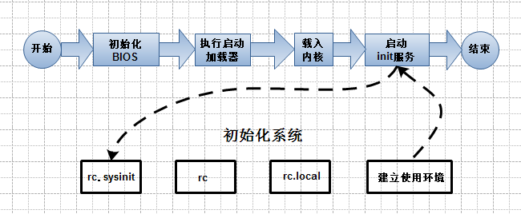

Linux学习之服务与进程管理
0 条评论简单的介绍下linux的系统启动流程，方便我们深入了解linux操作系统，对排除linux系统故障进行帮助
Linux系统的加载流程

启动第一步－－加载BIOS
当你打开计算机电源，计算机会首先加载BIOS信息，BIOS信息是如此的重要，以至于计算机必须在最开始就找到它。这是因为BIOS中包含了CPU的相关信息、设备启动顺序信息、硬盘信息、内存信息、时钟信息、PnP特性等等。在此之后，计算机心里就有谱了，知道应该去读取哪个硬件设备了。
启动第二步－－读取MBR
众所周知，硬盘上第0磁道第一个扇区被称为MBR，也就是Master Boot Record，即主引导记录，它的大小是512字节，别看地方不大，可里面却存放了预启动信息、分区表信息。
系统找到BIOS所指定的硬盘的MBR后，就会将其复制到0×7c00地址所在的物理内存中。其实被复制到物理内存的内容就是Boot Loader，而具体到你的电脑，那就是lilo或者grub了。
启动第三步－－Boot Loader
Boot Loader 就是在操作系统内核运行之前运行的一段小程序。通过这段小程序，我们可以初始化硬件设备、建立内存空间的映射图，从而将系统的软硬件环境带到一个合适的状态，以便为最终调用操作系统内核做好一切准备。
Boot Loader有若干种，其中Grub、Lilo和spfdisk是常见的Loader。
我们以Grub为例来讲解吧，毕竟用lilo和spfdisk的人并不多。
系统读取内存中的grub配置信息（一般为menu.lst或grub.lst），并依照此配置信息来启动不同的操作系统。
启动第四步－－加载内核
根据grub设定的内核映像所在路径，系统读取内存映像，并进行解压缩操作。此时，屏幕一般会输出“Uncompressing Linux”的提示。当解压缩内核完成后，屏幕输出“OK, booting the kernel”。
系统将解压后的内核放置在内存之中，并调用start_kernel()函数来启动一系列的初始化函数并初始化各种设备，完成Linux核心环境的建立。至此，Linux内核已经建立起来了，基于Linux的程序应该可以正常运行了。
启动第五步－－用户层init依据inittab文件来设定运行等级
内核被加载后，第一个运行的程序便是/sbin/init，该文件会读取/etc/inittab文件，并依据此文件来进行初始化工作。
其实/etc/inittab文件最主要的作用就是设定Linux的运行等级，其设定形式是“：id:5:initdefault:”，这就表明Linux需要运行在等级5上。Linux的运行等级设定如下：
- 0：关机
- 1：单用户模式
- 2：无网络支持的多用户模式
- 3：有网络支持的多用户模式
- 4：保留，未使用
- 5：有网络支持有X-Window支持的多用户模式
- 6：重新引导系统，即重启
启动第六步－－init进程执行rc.sysinit
在设定了运行等级后，Linux系统执行的第一个用户层文件就是/etc/rc.d/rc.sysinit脚本程序，它做的工作非常多，包括设定PATH、设定网络配置（/etc/sysconfig/network）、启动swap分区、设定/proc等等。如果你有兴趣，可以到/etc/rc.d中查看一下rc.sysinit文件，里面的脚本够你看几天的。
启动第七步－－启动内核模块
具体是依据/etc/modules.conf文件或/etc/modules.d目录下的文件来装载内核模块。
启动第八步－－执行不同运行级别的脚本程序
根据运行级别的不同，系统会运行rc0.d到rc6.d中的相应的脚本程序，来完成相应的初始化工作和启动相应的服务。
具体位置：/etc/rc.d/
启动第九步－－执行/etc/rc.d/rc.local
你如果打开了此文件，里面有一句话，读过之后，你就会对此命令的作用一目了然：
This script will be executed after all the other init scripts.
You can put your own initialization stuff in here if you don’t
want to do the full Sys V style init stuff.
rc.local就是在一切初始化工作后，Linux留给用户进行个性化的地方。你可以把你想设置和启动的东西放到这里。
启动第十步－－执行/bin/login程序，进入登录状态
此时，系统已经进入到了等待用户输入username和password的时候了，你已经可以用自己的帐号登入系统了。漫长的启动过程结束了，一切都清静了…
服务
服务的种类
Linux提供了许多的服务。这些服务，可以使依照其功能和依照服务启动的方法与执行时的特性进行分类。
依照功能分类：
系统服务
—某些服务的服务对象是Linux系统本身，或者Linux系统用户，这类的服务我们称为系统服务（System Service）网络服务
提供给网络中的其他客户端（Clients）调用使用的服务，这类的服务我们统称为网络服务（Networking Service）
依照服务启动的方法分类
独立系统服务
服务一经启动，除非因为关闭系统或者管理者手动结束，否则都将在后台执行，不管有没有被用到。这样的服务我们称为独立系统服务(Standalone Service)。 独立系统服务有时候又被称为Sys V服务 （Sys V Service）临时服务
与独立系统服务不同，临时服务（Transient Service）平时并不会启动，而是当客户端需要时才会被启动，使用完毕会结束。
服务的管理
- 手动的启动或停止独立系统服务
为了简化Linux服务管理的麻烦，Linux特别为每一个独立式的服务，提供了一个服务启动程序文件（Service Startup Script）。
所有的服务启动文件被储存在/etc/rc.d/init.d/目录下
- 如何利用脚本直接管理服务
/etc/rc.d/init.d/里面每一个文件就是某一个服务的启动程序文件，你可以直接执行某一个启动程序文件，借以来启动或者停止该服务
不同的服务启动文件可能会有不同的动作参数：
-start： 启动这个服务
-stop： 停止这个服务
-restart： 先停止，再启动，也就是重新启动的意思。
-reload： 重载配置文件，这个参数只有在服务已经启动的状况下才 能使用。
-condrestart：有条件的重新启动，这个服务必须是已经启动的，才会被重新启动；如果这个服务尚未启动，则无须启动之。
-status： 查看目前服务的启动状态。
service命令管理方法
用法： service filename action
动作参数：
start
stop
status
守护进程
inetd是一个特殊的程序，不断监控所有通讯端口。一旦有客户端调用某一个启动文件时，这个程序就要负责启动该服务；而在客户端使用完毕后，改程序也必须要负责结束。
守护进程服务位置：/etc/xinetd.d1
service xinetd start/stop/status
服务的自启动
chkconfig命令主要用来更新（启动或停止）和查询系统服务的运行级信息。谨记chkconfig不是立即自动禁止或激活一个服务，它只是简单的改变了符号连接。
使用语法：1
chkconfig [--add][--del][--list][系统服务] 或 chkconfig [--level <等级代号>][系统服务][on/off/reset]
参数用法：
–add 增加所指定的系统服务，让chkconfig指令得以管理它，并同时在系统启动的叙述文件内增加相关数据。
–del 删除所指定的系统服务，不再由chkconfig指令管理，并同时在系统启动的叙述文件内删除相关数据。
–level<等级代号> 指定读系统服务要在哪一个执行等级中开启或关毕。
等级0表示：表示关机
等级1表示：单用户模式
等级2表示：无网络连接的多用户命令行模式
等级3表示：有网络连接的多用户命令行模式
等级4表示：不可用
等级5表示：带图形界面的多用户模式
等级6表示：重新启动
需要说明的是，level选项可以指定要查看的运行级而不一定是当前运行级。对
于每个运行级，只能有一个启动脚本或者停止脚本。当切换运行级时，init不会重新启动已经启动的服务，也不会再次去停止已经停止的服务。
chkconfig –list [name]：显示所有运行级系统服务的运行状态信息（on或off）。如果指定了name，那么只显示指定的服务在不同运行级的状态。
chkconfig –add name：增加一项新的服务。chkconfig确保每个运行级有一项启动(S)或者杀死(K)入口。如有缺少，则会从缺省的init脚本自动建立。
chkconfig –del name：删除服务，并把相关符号连接从/etc/rc[0-6].d删除。
chkconfig [–level levels] name：设置某一服务在指定的运行级是被启动，停止还是重置。
使用范例：
1 | chkconfig --list #列出所有的系统服务 |